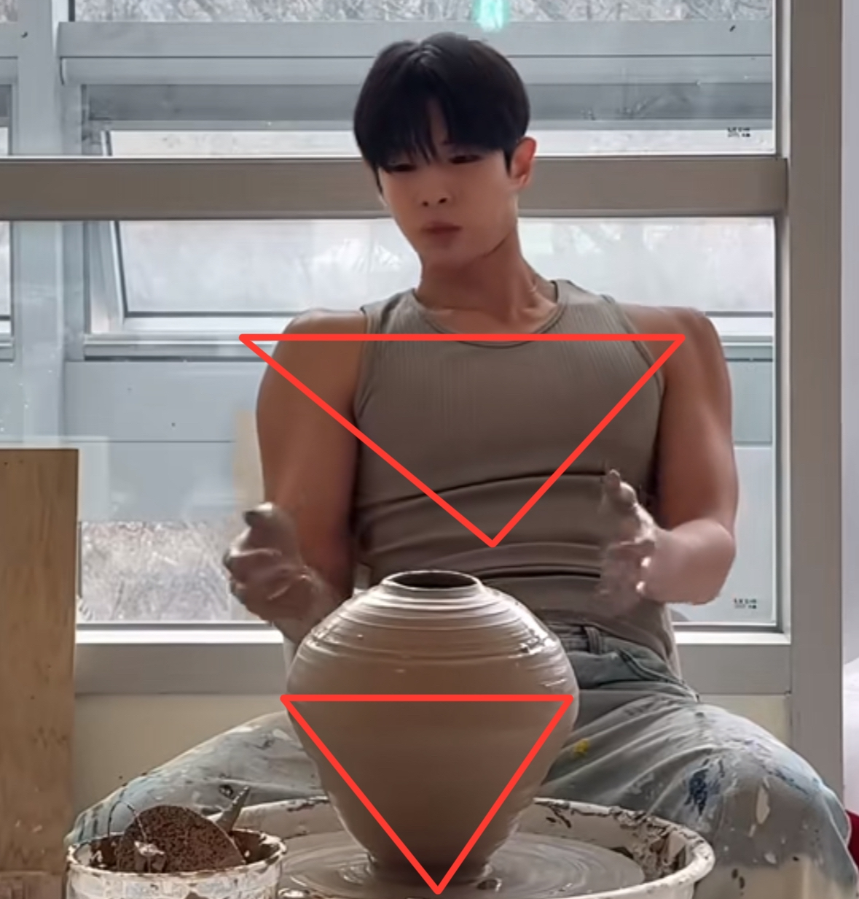
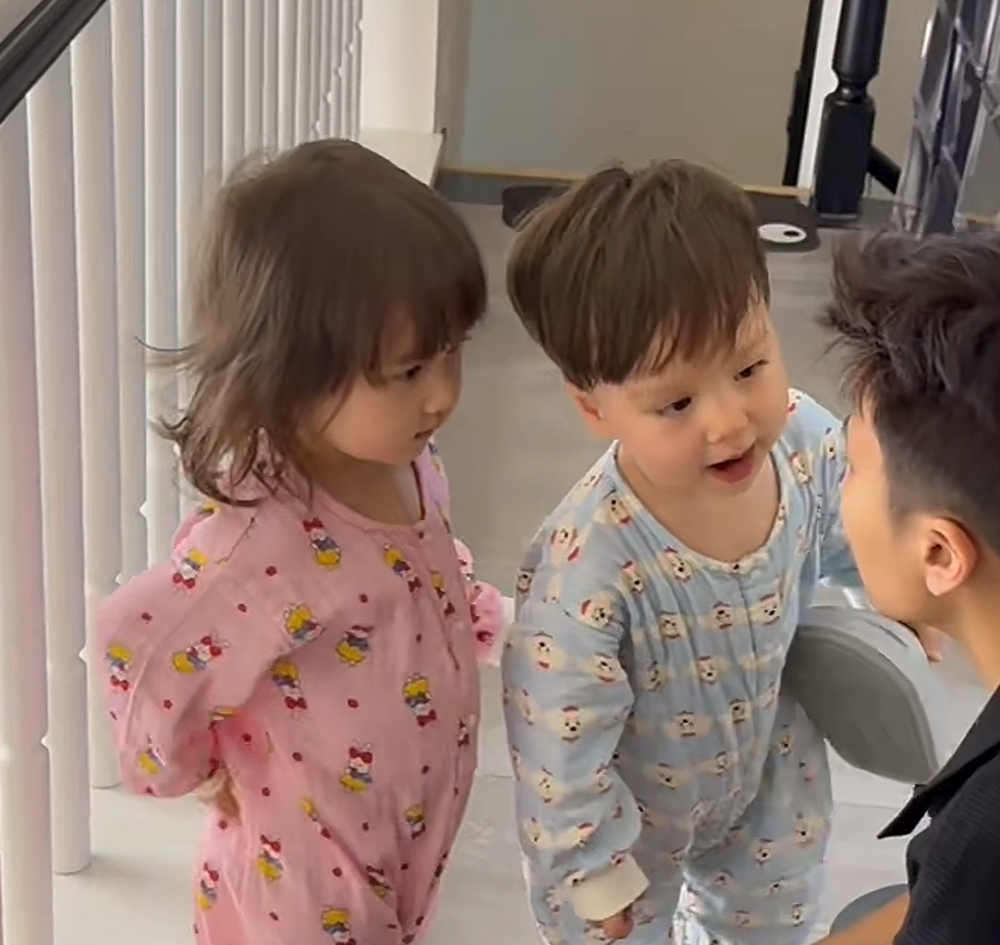

这么权威的歌在KTV的时候居然没想起来[尬笑]
张信哲你的权威我后知后觉[憨笑]
《过火》怎么忍心怪你 犯了错 是我给你自由过了火 《爱如潮水》我再也不愿见你在深夜里买醉 不愿别的男人见识你的妩媚 《别怕我伤心》你和他之间 是否已经有了真感情 别隐瞒 对我说 别怕我伤心 纯纯舔狗日记 要么说人家怎么是情歌王子呢[苦涩]
以后再也不嘲笑我爸的歌单了，因为我已经到了能听懂的年纪了[泪奔]
求这样的小说代餐[憨笑][比心]
不仅歌权威，哥也权威[看][左上]
哇塞哇塞，真的太权威了[舔屏]

最近悟了他的歌，舔狗之歌，[流泪]
张信哲几乎每首歌都是爱而不得卑微男或者男小三口吻，真的很爽啊，很权威啊，谁懂[憨笑][憨笑]
哈哈哈哈张信哲也是好起来了 今年不用唱悬溺了哈哈哈哈哈 南村群童欺我老无力 逼我老年唱悬溺哈哈哈哈哈哈
见识了哥的曲风终于理解当时评论区对哥唱悬溺的感觉了[流泪][流泪]
张信哲本可体面的老去，直到……
不是这个是硅胶垫肩整皮肤里了吗
我整不了这个我情绪不稳定 在家吃螺狮粉小心翼翼的把白体恤喷上一大块红油，气得我把T恤脱了塞碗里了
我嘞个自带垫肩[泪奔]
顺产头，宽肩，拥挤的五官，韩国欧巴无疑了
这肩膀确定是天生的吗[泪奔][泪奔][泪奔]
肩膀练这么好，斜方肌又很小，练的太好了[赞][赞][赞]
你俩一个造型 
我猜是韩国思密达[黑脸]
遇到原唱够开心的[泣不成声]
师傅：其实你一上车我就人出你来了[看]
这对吗[泪奔]
“娘子，看来这次，你闯下的麻烦不小”，这句话我一直记了很多年
这个是不是整容夫妻大战寻根老头的
杀父之仇是真的，多年的平淡相守也是真的，恨是真的，但 爱也是真的
第一个发明第一人称解说的是个天才
“我们都曾是他缝合残缺的针线，最终却成了扎回他眼中的倒刺”这句太棒了，而且感觉不是 ai 写的
原来这个这么甜吗[憨笑]小时候看那个罗摩遗体给我看的做噩梦
我真的好喜欢那句“我愿化身石桥，受五百年风吹五百年日晒五百年雨打，只愿她从那桥上走过”
复仇里面掺杂一丝真情，仙品
有一点，江阿生一开始就知道细雨是曾静，他听那个给他俩整容的人说的，也是刻意接近曾静的
初恋教会了她保命 丈夫陪着她一起成长 生命中能有这两个人的出现 也是很有意义了。
剑雨这部电影真的太经典了 不知道当时为什么会不火
这里面死的最逆天的就是雷斌，受了重伤不去医去吃鱼[憨笑]虽然知道是深情，但是你都能跑回家为什么不去医馆包扎啊
女主整容前的样子感觉跟男主更般配，林熙蕾整成杨紫琼老了十岁
当着个太监的面嘲讽他不是不行而是没有，这个叶绽青简直是自己作死
弟一个女的跟第二个女的，眼神都没变，让我以为真的是易容，这才是演技的牛逼之处
我觉得张人风最后能接受曾静，是因为他知道，剑雨只是别人手里最锋利的剑，剑不分好坏，善恶在于使剑之人心中…
我寻思，这俩张脸都不普通啊！前面的一股子江湖杀手的锋芒锐利的美，后面是那种历经沧桑的温静美
这电影很好看啊，还有男主应该是韩国人吧，但是我觉得他好帅，非常有魅力， 演中国的古装一点也不违和
这个女人得是多幸运啊，能遇到那么爱自己的两个男人
好喜欢游本昌老师的声音，那一句……真的禅意满满[苦涩]
[暗中观察]deepseek写的比喻奇特，导致我每次在一瞬间就辨别出来
小时候看的时候，一直想吃男主手里的那个豆皮
知道有霍乱这么快，下个月还能去云南玩嘛？会不会有影响
来云南玩的人，带几瓶你们那边水，避免水土不服怀疑自己疟疾
突然发现H和y真的超级适合 再有个小孩或者小动物可以叫APP 加起来就是Happy
人人都挑拨我们的关系 偏偏我们俩是最好的兄妹[色] 
以后肯定有人叫妹妹袁铁
宝宝，我把你们放课件里啦！！！
本来都要看哭了 突然来一句小h有年纪轻轻就有做饭天赋[流泪]又给我憋回去了
本来很感动直到我看到这个[坏笑]
斯坦威+汤臣一品+劳力士，简直是王炸中的王炸！
生活也是好起来了，少爷都来给我弹钢琴了
那个水算不算尸水[九转大肠]
你还别说！我家猫真的一点不动
我现在就是女律看丁律！男律看蓝律！[赞][赞][赞]
丁律，怎么才能联系到这哥们，我想去俄罗斯种地
知道了，黄毛不要，一定要黑毛的[偷笑]
大嘴的鼻子怎么黑黑的
“谁怕”不应该是“哪个怕”吗[调皮]
科考为官都要学他们官话啊，就像我们应试普通话一样
救命，我要被这个笑死了哈哈哈哈[憨笑]
杨坤在家偷摸唱了两句发现一模一样，更气了[看]
杨坤晚上睡不着，唱了一段发现和他唱的一样[捂脸]
开庭的时候法官都得自己带板凳，因为……
《阿坤朝我扔传票，我拿传票打广告》
[流泪][流泪][流泪]开庭了
四川芬达被告了之后，半个多月了还没更新作品
《断气的水手》
全看了[捂脸]怪不得上大专
天啊 这些居然都是同一年的
她二姨扎的小辫子真好看[比心][比心]
自从小妙妙跟了二姨，是个精致文静的小女孩了[比心][比心][比心]
抽烟根本靠送 喝酒根本靠供 工资根本不动 老婆根本不用[捂脸][捂脸][捂脸][捂脸]
人民好干部，全心全意为人民[赞]
杜兰特终于要有根了
十年前你还是敬业呢
毛蛋什么时候开粉丝见面会？我甩棍都买好了
长大后[憨笑]
我会永远的注视你…永远….
谁懂这句话出来的救赎感[憨笑]
像马思唯
暗网上都出悬赏令了[捂脸]
时代少年团小时候的样子[赞]
我要去陕西开个诊所，专治鼻炎[干饭人]
Read more: